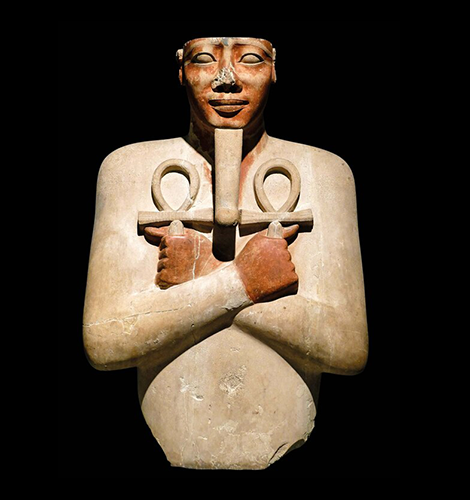
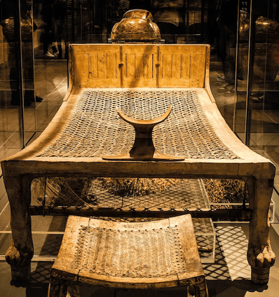
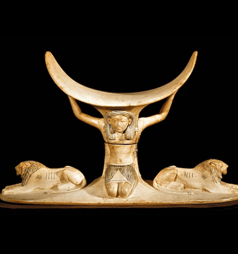
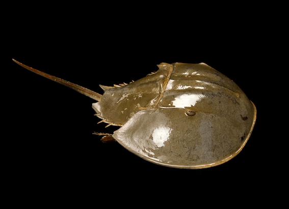
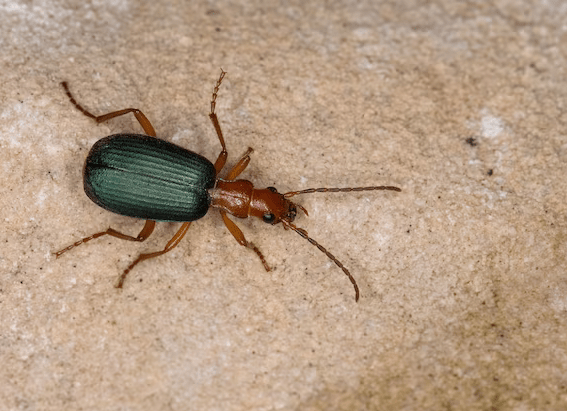

NATIONAL GEOGRAPHIC
The world's oldest nightmare came from Egypt. What hidden meanings did it hold
HISTORY & CULTURE
- 
- 
- 
Falling. Being chased by monsters. Showing up to school naked. These may be common common scary dreams today, but the world's oldest nightmare was a lot less action packed. The 4,000-year-old Egyptian night fright centered on staring. Just staring.
Around 2100 B.C., a Egyptian man named Heni wrote a letter to his dead father, asking him for help with his nightmares. Heni described how in his dreams Seni, his deceased dad's servant, keeps staring at him. Perhaps trying to relieve a guilty conscience, Heni alluded to how he mistreated Seni but claimed he was not the first to abuse him. Heni begged his father: “Do not allow him to do me harm.”
Heni's letter is one of the earliest references to dreams in ancient Egypt found in the 20 or so non-royal Letters to the Dead. Written on papyrus or pottery and typically left in the tombs of dead relatives, these missives often include requests for favors, such as ending a property dispute or ensuring the birth of a healthy child. Writing letters to departed relatives became a common practice throughout ancient Egyptian history. Occasionally these requests were inscribed on bowls with tasty offerings to coax the deceased into responding to a request.
Egyptians put great value on dreaming as a way to access a world normally hidden from view. They devised history’s first manual of dream interpretation and first recorded humanity’s dreams and nightmares. The most common word for “dream” in ancient Egypt was the noun resut, which means “awakening.” There was no verb for dreaming; it was not active but passive, something to be observed.
Traveling through the portal of sleep, Egyptian dreamers “awakened” in another world that existed between the afterlife and the everyday. In this space, they might receive communications from the gods and the dead. “In contrast to modern understandings of the nature of a dream, Egyptians had no internal psychological explanation for them,” said Kasia Szpakowska, author of Behind Closed Eyes: Dreams and Nightmares in Ancient Egypt. Dreams were not intended to give insight into the dreamer’s psyche as they might be interpreted today. Instead, Egyptians saw them as omens about their present and future.
Dream interpretations
Pharaohs used the power of dreams to help secure their thrones, but everyday Egyptians were looking to guides to decipher their nightly dreams. Written around 1220 B.C., the Dream Manual, found in the so-called Chester Beatty Papyrus, was one such guide. Pieces of the work are missing, but what survives are lists of dreams and their interpretations 139 dreams that are interpreted as good omens are listed first, followed by 83 bad harbingers.
Each dream is composed of the overarching premise followed by lists of dream images with an evaluation of the dream as “good” or “bad,” and an interpretation. For instance, the manual proclaims: “If a man sees himself dead, this is good; a long life awaits him.”
While the Dream Manual is more likely a catalog of potential dream imagery rather than a record of actual dreams, it reveals what issues were of concern to everyday Egyptians. Not surprisingly, many of them—financial matters, matrimonial problems or personal happiness, social status, health, and divine favor or disfavor feel similar to modern worries. “They enlighten us on the worries of the ‘average’ Egyptians, since it is clear that dream books were not meant to cater only for the elites,” said Szpakowska.
Protection from the night
In the early years of the Third Intermediate Period (1069-664 B.C.), a series of texts featuring protective spells now called “Oracular Amuletic Decrees” came into vogue to ward off nightmares. During this turbulent period, Egypt was struggling and failing to maintain its independence from the powerful Assyrian Empire. Egyptians used these protective spells to keep bad dreams and sleep paralysis away.
The Chester Beatty Papyrus also includes a cure to drive out the bad dreams using a poultice of bread, herbs, beer, and myrrh rubbed on the dreamer’s face. “In many ways, the ancient Egyptian methods for combating nightmares were not so far off from those of today as we might think,” said Szpakowska.
To protect themselves from bad dreams, Egyptians were also advised to decorate their bedposts, headboards, and headrests with the fierce images of protective guardians, such as Taweret, a fertility goddess and protector of children.
Comments :
- john Very good
- john Very good
Leave a Reply
Your email address will not be published. Required fields are marked*
Related posts:
-
Atlantic horseshoe crab
Atlantic horseshoe crabs may appear alien, but their history as earthlings is pretty impressive. They’ve been around for 450 million years, predating the dinosaurs by more than 200 million years. They live on the Atlantic coast of North America
View article -
Bombardier beetles
Bombardier beetles have the infamous ability to synthesize and release rapid bursts of stinky, burning-hot liquid from their rear ends. These noxious emissions can kill other insects, or startle potential predators into backing off.
View article -
 Wild turkeys are at a record high in New England but not all are thankful.
Wild turkeys are at a record high in New England but not all are thankful.AMHERST, NEW HAMPSHIREWild turkeys are a familiar sight throughout New Hampshire, where flocks strut along roadsides and wander through backyards.
View article